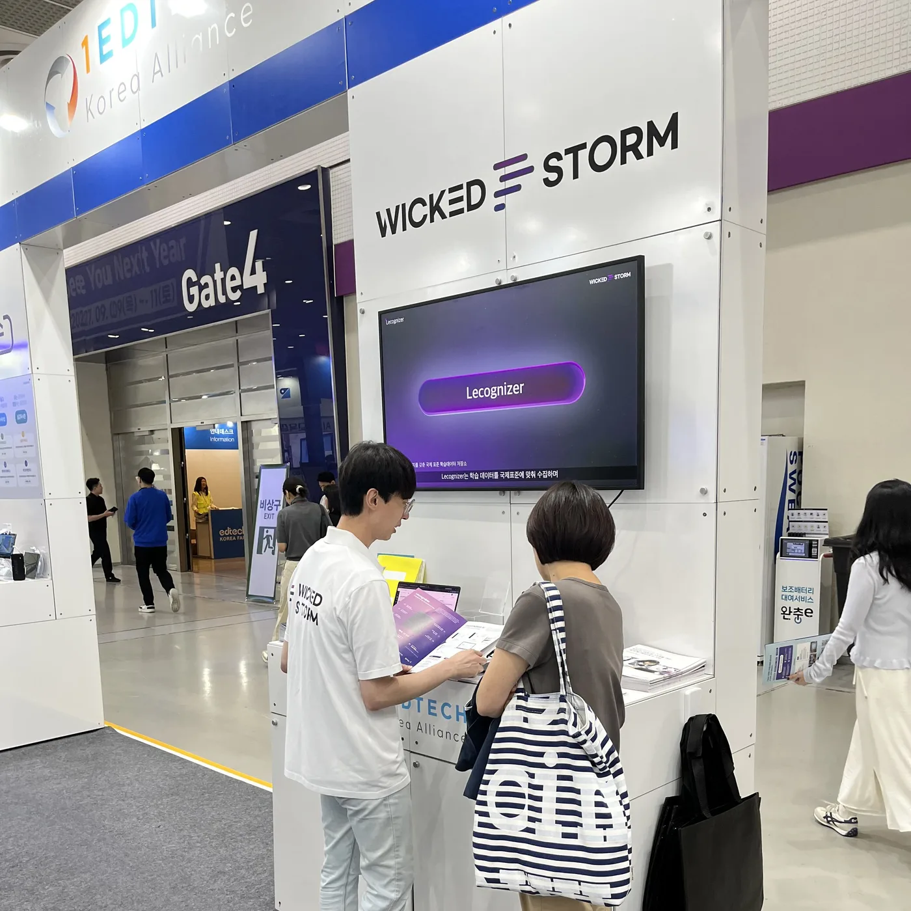
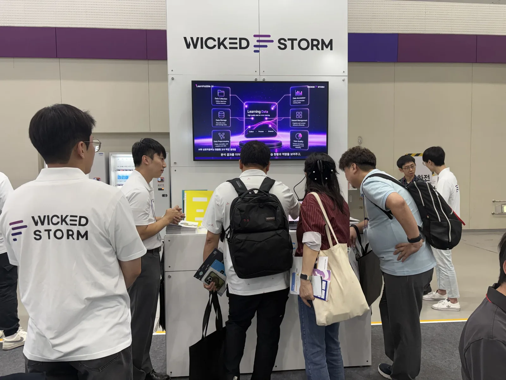
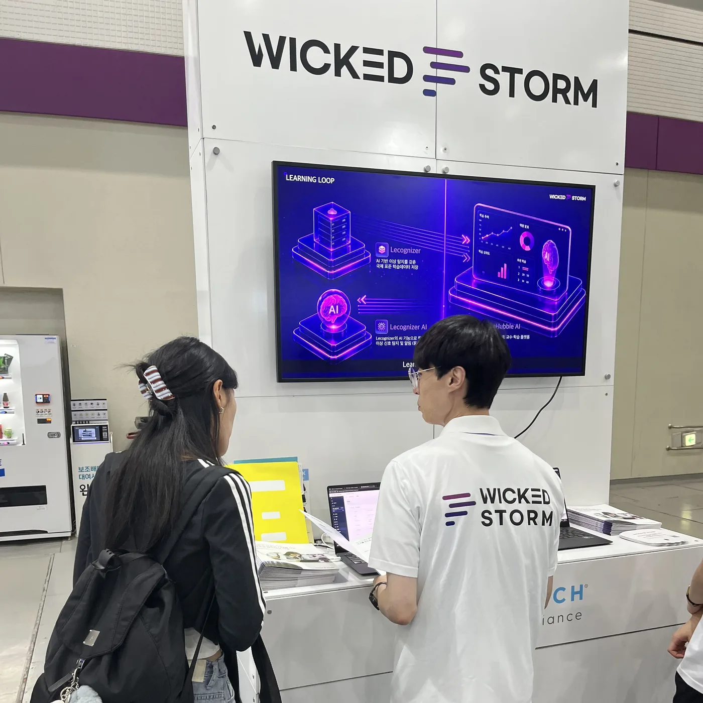
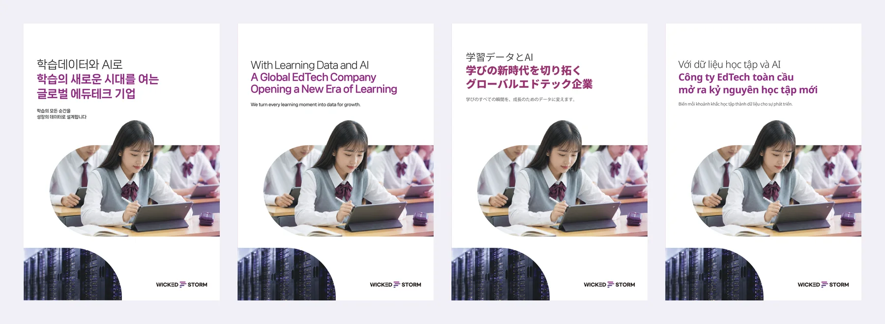
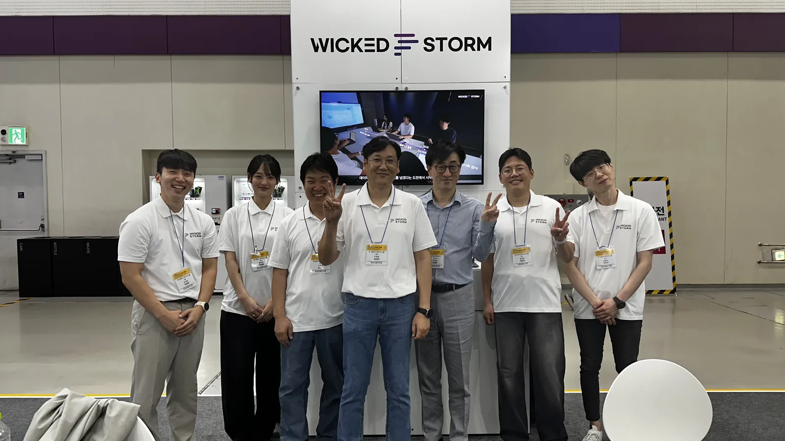

위키드스톰, 에듀테크 코리아 페어서 ‘학습의 선순환’ 선보여

- 국제 표준 학습데이터 저장소 Lecognizer와 AI 학습 경험 플랫폼 LearnHubble AI 시연
- (사)1EdTech Korea 공동관 참여, “이번 학기의 학습데이터가 다음 학기 교육을 설계한다”
- 국문·영문·일문·베트남어 4개 언어 카탈로그 배포, 10월 하노이 VIETEDU 2026 참가 예정
에듀테크 기업 위키드스톰(대표 이정준)이 9월 17일부터 19일까지 서울 코엑스에서 열린 ‘2026 에듀테크 코리아 페어(EdTech Korea Fair 2026)’에 참가해, 학습데이터 수집부터 AI 분석, 교수·학습 현장의 실행까지 하나로 잇는 ‘학습의 선순환(Learning Loop)’ 구조를 선보였다고 25일 밝혔다.
위키드스톰은 국제 교육기술 표준 컨소시엄 1EdTech의 한국 조직인 (사)1EdTech Korea 공동관에 설립 이사회로서 부스를 꾸렸다. 부스에서는 국제 표준 학습데이터 저장소 Lecognizer와 AI 학습 경험 플랫폼 LearnHubble AI를 실제 화면으로 시연했고, 대형 화면에서는 기업 홍보 영상과 제품 소개 영상이 이어서 상영됐다.

시연의 중심은 한 학기 동안 쌓인 학습데이터가 다음 학기 교육 설계로 이어지는 흐름이다. Lecognizer는 교수·학습·운영 과정에서 생기는 학습 활동을 국제 표준으로 수집하고, 1EdTech CASE 기반 교육과정 체계에 맞춰 쌓는다. Lecognizer에 포함된 AI 기능인 Lecognizer AI는 쌓인 데이터를 분석해 많은 학습자가 어려워한 구간처럼 평소와 다른 신호를 찾아 알린다.
LearnHubble AI는 이 신호를 운영자·교수자·학습자의 판단과 행동으로 연결한다. 교수자는 AI가 제안한 보충 수업 초안을 확인해 적용하고, 학습자는 강의와 과제 중 도움이 필요한 순간 열리는 AI 패널에서 힌트를 받아 학습을 이어 간다. 이렇게 실행된 결과는 다시 Lecognizer에 학습데이터로 쌓여 다음 학기 교육과정을 보완하는 근거가 된다.

위키드스톰은 이번 시연에서 ‘AI는 찾고 제안하며, 판단과 적용은 사람이 한다’는 원칙을 강조했다. AI가 신호를 찾고 초안을 만들면, 운영자와 교수자가 알림과 원본 데이터를 함께 보고 결정하는 구조다.

위키드스톰은 Lecognizer로 GS 인증 1등급을 받았고, xAPI 학습 행동 데이터 기반 이상 학습 탐지 시스템(제10-2883249호)과 LLM 기반 학습자 프로파일링 방법(제10-2767110호) 등 AI 특허 2건을 등록했다. 교육부 AI 디지털교과서 학습데이터 허브 구축, 누적 사용자 240만 명의 KERIS ‘똑똑! 수학탐험대’ 등 공교육 현장의 사업도 수행해 왔다.
현장에서는 국문·영문·일문·베트남어 4개 언어로 제작한 카탈로그도 함께 배포했다. 카탈로그와 회사소개서는 위키드스톰 홈페이지 자료실에서 내려받을 수 있다.

위키드스톰 관계자는 “학습의 모든 순간을 국제 표준 학습데이터로 쌓고, 그 데이터가 다음 교육을 설계하는 근거가 되도록 하는 것이 위키드스톰이 하는 일”이라며 “박람회에서 만난 교육 현장의 의견을 제품에 꾸준히 반영해 나가겠다”고 말했다.

한편 위키드스톰은 10월 15일부터 18일까지 베트남 하노이에서 열리는 ‘VIETEDU 2026’에 단독 부스로 참가해 해외 교육 현장에 학습의 선순환 구조를 소개할 예정이다.
도입·시연 문의: 02-2205-1470 · manager@wickedstorm.kr · 온라인 문의